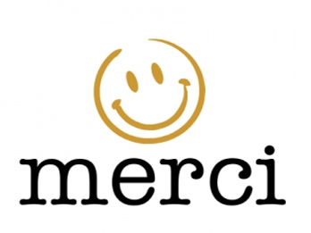

La Fnac a été créée en France en 1954 par Max Théret et a été rejoint plus tard par André Essel, la Fnac est un magasin de vente de divers objets et d'appareils de technologie ou des livres, que ce soit en achat en ligne ou en rayon. Le nom Fnac signifie "Fédération Nationale d'Achats des Cadres".
Mon rôle en tant que vendeur stagiaire a été de conseiller les clients dans leurs différents achats et d'assister mes collègues vendeurs pour diverses ventes de produits de technologie comme des ordinateurs, des téléphones, des montres connectés, écouteurs, casques et autres accessoires.
Je pouvais aussi assister mes collègues dans diverses autres tâches comme l'étiquettage de produits, le rangement et l'organisation des rayons, passer les commandes avec la vérification d'un vendeur, gérer la réception de colis et aider mes collègues dans d'autres tâches plus manuelles.
J'ai pu découvrir à quoi ressemblait le monde du travail, travailler en équipe et avoir des horaires comme un vrai salarié, j'ai aussi appris beaucoup sur l'organisation et j'ai dû trouver des solutions dans des situations compliquées. Il y avait aussi une très bonne ambiance dans l'équipe.
Le plus compliqué a été de s'adapter physiquement et mentalement à ce nouveau rythme de vie, devoir rester debout toute la journée, les clients désagréables et malpolis.
Cela a été une très bonne expérience professionnelle, je me suis très vite senti à l'aise et l'équipe a été très sympathique et patiente avec moi,
je remercie toute l'équipe de la Fnac de Salon-de-Provence pour tout ce qu'ils ont fait pour moi.
